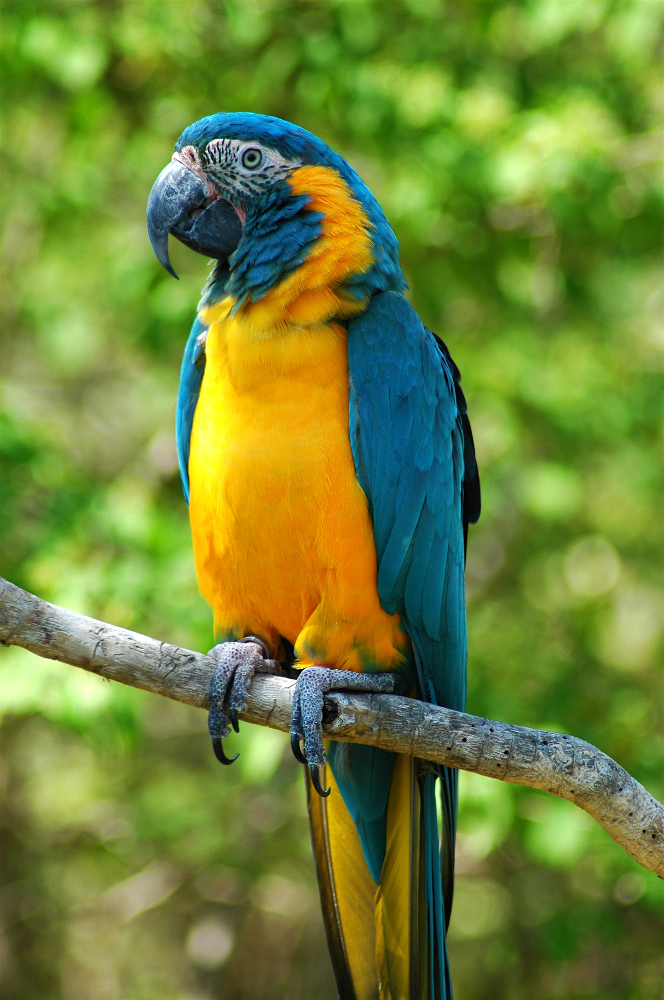
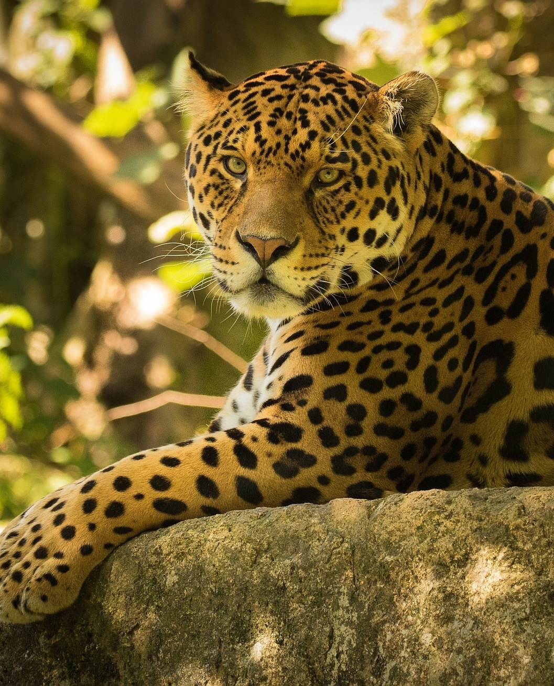
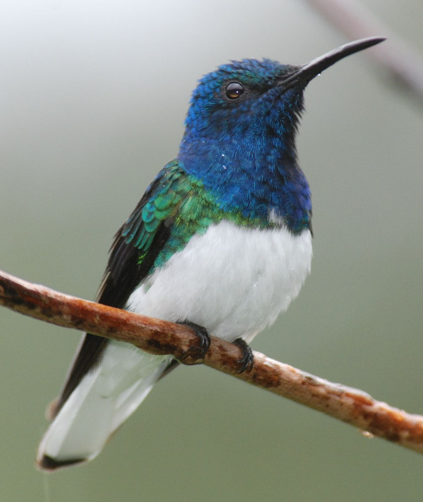

A trópusi esőerdők az állatok és növények gazdag biodiverzitását tartalmazzák, amelyek közül sok egyedülálló ezekre az ökoszisztémákra. A trópusi esőerdőkben élő állatok ugyanolyan sokfélék lehetnek, mint az egzotikus madarak, a színes békák, a nagy rovarok és a nagy macskák. Az esőerdők növényei, például nagy fák, gyönyörű orchideák, furcsa kinézetű virágok és ízletes gyümölcsök csak kiegészítik az esőerdő biomját.
Állatvilág

Ara
Az arapapagájok igazi óriásai a díszmadaraknak. A legnagyobb testű papagájok. Ha valaki egyszer élőben is találkozott velük, akkor biztos lenyűgözte őt ezen madarak szépsége, eleganciája és nem utolsósorban intelligenciája. Az arák a papagájtartás csúcsát jelentik. Csak kevesen engedhetik meg maguknak, hogy ilyen madarat fogadjanak be otthonukba, egyrészt igen költséges madarak, másrészt nagy mozgásigényük miatt csak volierben vagy madárszobában tarthatóak.Mivel mindegyik ara faj CITES védelem alatt áll, így a velük történő kereskedés – beleértve a esetleges szaporulatot vagy az elhullást is – bejelentés köteles. Némelyik ritkává vált fajt még az állatkertek vagy madárparkok is csak szigorú megkötésekkel tarthatnak. Ezen utóbbiakról most nem írok. Hatalmas csőrük könnyedén birkózik meg a legkeményebb magok héjával is. Mégis kevesebbet rágnak mint ahogy az a nagy csőrük alapján feltételezhető lenne. Ez persze nem jelenti azt, hogy ne lennének képesek rövid idő alatt hatalmas károkat okozni a lakás berendezésében ha felügyelet nélkül maradnak. Erős csőrüknek köszönhetően igen komoly sérülést is képesek okozni, bár ez nem jellemző szerencsére. Hangerejük is – szó szerint – eget rengető.A kerti volierben tartott madár ha egyszer kiereszti a hangját, akkor az több száz méterről is jól hallható. Most képzeljük el ugyanezt a hangot zár térben. Szerencsére a megfelelően szocializált madár ritkán él ezzel a hangos kommunikációjával, emiatt egyáltalán nem nevezhetők zajos madárnak. Élőhelyükön kisebb – nagyobb csapatokban élnek, sokuk még a szaporodási időben is a többiek közelében marad. Ennek megfelelően a kedvencként tartott arának is szüksége van, hogy a „csapat” teljes jogú tagja lehessen. Csak ebben az esetben a körülötte élő emberekkel alkot csapatot. Az egyedül tartott madár rendkívül erős kötődést mutat az általa kiválasztott ember iránt, ez az ivarérettségük elérése után kissé zavaró lehet. Ha párban tartjuk őket, akkor ez a kötődés gyengébb lesz, a madár kiegyensúlyozottabb viselkedést fog mutatni. Minden esetben nagyon fontos a szocializáció, a nem megfelelően nevelt ara papagáj rikácsolóssá, csípőssé, agresszívvá válhat. Serdülőkorban szeretnek birkózni, mászkálni játszani, ilyenkor feszegetik a határokat és előfordulnak erőteljesebb csípések is. Ha ilyenkor odafigyelünk és megfelelően kezeljük ezeket az eseményeket (nem büntetni kell a madarat, hanem megértetni vele, hogy ezt egy nem kívánatos viselkedés), akkor a későbbiekben nem lesznek ilyen problémáink velük. Folyamatos motivációkra, játék lehetőségekre és rágcsálni valóra van szükségük. A legjobb ha nagy tér és nagy játszóhely áll a rendelkezésükre. Játékokra azonban később is szükségük lesz, mivel nagyon intelligens madarak, ha nincsenek kellőképpen motiválva, könnyen elunják magukat. Az unatkozó papagáj pedig sokat kiabál – gazdái és a szomszédok nagy örömére – de könnyen tolltépőssé is válhat. Intelligenciájukra jellemző, hogy képesek a tárgyállandóság felismerésére, meg tudják különböztetni a jobb és bal fogalmát, a logikai feladatokat pedig az embereket is megszégyenítő sebességgel oldják meg. Egy érdekes tévhit is elterjedt az arák táplálkozásával kapcsolatban. Megfigyelték ugyanis, hogy az arák a folyópartok agyagos részéből fogyasztanak. Úgy gondolták, hogy ennek célja a méregtelenítés, hiszen az elfogyasztott esetleg mérgező növények hatóanyagait az agyag közömbösítheti. Azonban volt a megfigyelésekben egy aprócska furcsaság. Csak egy bizonyos területen élő arák fogyasztottak agyagot, távolabbi helyen élők azonban már nem. Több évnyi kutatómunka után jöttek rá a megoldásra. Csak azon a területen fogyasztanak az arák – de valójában más papagájfajok is – a folyóparti agyagból ahol a tengertől való távolság miatt a növények nátrium tartalma alacsony. A folyóparti agyagban viszont ez az ásvány a növényekhez képest többszörös koncentrációban van jelen. Tehát nem a méregtelenítés, hanem a hiányzó ásványi anyag miatt eszik a folyóparti agyagot. Épen ezért egyáltalán nincs szükség a háznál tartott madarak „agyag szükségletének” kielégítésére, a magkeverékekben és gyümölcsökben bőségesen megtalálható a szükséges nátrium, azt kiegészíteni vagy külön adagolni felesleges, sőt akár káros is lehet.

Jaguár
A jaguár (Panthera onca) az emlősök (Mammalia) osztályának ragadozók (Carnivora) rendjébe, ezen belül a macskafélék (Felidae) családjába tartozó nagytestű faj, amely Dél- és Közép-Amerika trópusi és szubtrópusi területein fordul elő. Közeli rokonságban áll az Óvilágban élő nagymacskákkal, köztük az oroszlánnal, a tigrissel és a leopárddal. Az Újvilágban élő legnagyobb és legerősebb macskaféle és az egyetlen faj a párducformák alcsaládjából (Pantherinae), amelyik Amerikában fordul elő. A tigris és az oroszlán után a jaguár a harmadik legnagyobb macskaféle. Előfordulási területe az Amerikai Egyesült Államok délnyugati részétől és Mexikótól kezdve, Közép-Amerikán és a dél-amerikai kontinens legnagyobb részén keresztül, egészen Paraguayig, valamint Argentína északi részéig tart. Az 1920-as évek első felére az USA-ból már szinte kiirtották a jaguárt. Az Arizona állambeli Tucson nevű város környékén élő állomány kivételével, mely valószínűleg fenntartja még magát, de a Mexikóból érkező bevándorlást megállítani hivatott fal építése elszigeteli az ott élő néhány példányt, ezért ennek a kisszámú populációnak sincs sok esélye túlélésre. Megjelenésében a leopárdhoz hasonlít, azonban jobban megfigyelve látható, hogy az újvilági állat valamivel nagyobb és zömökebb testfelépítésű, mint az óvilági rokona, amely alacsonyabb és nyújtott testű. Viselkedése és az élőhelye inkább a tigriséhez hasonlít. Az esőerdőt részesíti előnyben, de számos élőhelyen fellelhető; egyaránt megtalálható mindenféle erdőtípusokban, mocsaras területeken, erdő közeli füves részeken és tengerpartokon is. Szintén viselkedési hasonlatosságot mutat a tigrissel azzal, hogy általában vízközelben él, és mint az ázsiai rokona, előszeretettel úszik. A jaguár magányos állat és lesből támad; az elterjedési területén csúcsragadozónak számít. Az élőhelyén megtalálható majdnem összes másik faj szerepel az étlapján. Kulcsfaj, mivel zsákmányaira vadászva egyensúlyban tartja az ökoszisztémában levő élőlényeket, így a növényevőknek nincs esélyük túlszaporodni és tönkretenni a helybéli növényzetet. Érdekesség, hogy a többi nagymacskához képest is igen erős a harapása. Ennek az erős harapásnak köszönhetően a jaguár fel tudja törni még a páncélos hüllők (teknősök) védőburkát is, és át tudja harapni az emlősök és a krokodilok koponyáját. Ezzel a módszerrel az áldozata fülén keresztül a fogait az agyáig juttatva megöli áldozatát. Ez az elejtési mód szokatlan a nagymacskák körében. A Természetvédelmi Világszövetség (IUCN) Mérsékelten fenyegetett fajként tartja számon a jaguárt. A faj egyedszáma manapság csökken és számára legnagyobb veszélyt az élőhelyeinek elvesztése, valamint a meglévők egymástól való elszigetelődése jelenti. Nemzetközi egyezmények tiltják a jaguárral és a testrészeivel folytatott kereskedelmet, mégis Dél-Amerikában a farmerek még jelentős mértékben pusztítják az ott élő állományát. Az emberi tevékenység eredményeként sok korábbi élőhelyéből már eltűnt, de a jaguár jelenlegi elterjedési területe mégsem kicsi. Korábban Amerika-szerte előfordult, ezért számos indián kultúrában megjelent, így például a maják és az aztékok mitológiájában is jelentős szerepet játszott. A jaguár hasonlít a leopárdhoz, ám robusztusabb testfelépítésű és nagyobb foltok díszítik bundáját. Feje szögletesebb és rövidebb, végtagjai zömökebbek; egy hasonló méretű tigrissel vagy oroszlánnal összehasonlítva rövidebbek.A jaguár a Közép- és Dél-Amerikában a legnagyobb ragadozó emlős. A különböző állományok mérete és testtömege nagy mértékben változhat; az átlag 56–96 kilogramm között van. A nagyobb hímek elérik a 158 kilogrammos súlyt is; ez körülbelül megegyezik egy nőstény tigris vagy oroszlán súlyával.

Kolibri
Tudtad?
Több mint 300 kolibrifajt ismerünk, melyeknek zöme Amerika trópusi területein él, bár néhány fajuk Észak-Amerikában egészen Kanadáig honos, mások pedig dél felé egészen Chiléig elterjedtek.
A kolibrik a legkisebbek az összes madár közül: a jamaicai törpekolibri (Mellisuga minima) hossza például az egy centimétert sem éri el, a tömege pedig mindössze 0,365 gramm.
A testméretéhez viszonyítva a szuronyos kolibrinek (Ensifera ensifera) van a leghosszabb csőre.
A kolibrifélék (Trochilidae) a madarak osztályának sarlósfecske-alakúak (Apodiformes) rendjébe tartozó család. 112 nem és 341 faj tartozik a családba. Apró termetük ellenére a kolibrifélék a legagresszívabb madárfajok közé tartoznak: a domináns hímek nemcsak a vetélytársakat képesek súlyosan – akár halálosan – megsebesíteni hosszú és hegyes csőrükkel, de az etetési területükre betolakodó varjakat, szajkókat és sólymokat is hezitálás nélkül elkergetik, a nőstényekből pedig általában a fészek közelébe merészkedő állatok vagy emberek váltják ki a harcias viselkedést. Az általában káprázatosan tarka, irizáló tollazatú hímek büszkén parádéznak a meghódítani kívánt tojó előtt – a torkukon lévő ragyogó folt a hódító magamutogatás fontos kelléke. A párzás után azonban a nőstények magukra maradnak, rájuk hárul a fészekrakás gondja: kiszemelnek egy rejtett helyet, gyakran ágvillát, zuzmóból, mohából és pókhálóból készítik el mély, csésze alakú, jól álcázott fészküket a két fehér tojás számára. A költési időszak a fajtól függően 14–19 napig tart, a picurka fiókák vakon és tehetetlenül jönnek a világra. A tojó ettől kezdve megszámlálhatatlan apró rovart hord haza, hogy táplálja kicsinyeit. A fészek mellett egy helyben lebegve, óvatosan helyezi fiókái éhesen tátogó csőrébe a felöklendezett élelmet. A kicsik elég lassan fejlődnek, átlagosan három hetet töltenek a fészekben, a kirepülő fiatal kolibrik tollazata viszont már teljesen kifejlődött, és repülési tudományuk megközelíti a szüleikét. A kolibrik repülési módszere egészen rendkívüli. Szárnyuk szerkezete annyira eltér a többi madárétól (a sarlósfecskét kivéve), hogy nemcsak billegetni, de forgatni is tudják a vállízület körül, és valamennyi madárfaj közül csak ők képesek hátrafelé repülni. Szárnycsapásaik gyakorisága a legnagyobb a madárvilágban: a repülés közben egy helyben lebegő kolibri legalább 55 szárnycsapást tesz meg másodpercenként. Nem csoda, hogy a szívük is igen fürgén dolgozik: egy átlagos kolibri szíve percenként 1200-at ver – ehhez képest egy felnőtt ember nyugalmi pulzusa 60-100 ütés/perc. Nyolcas alakzatot leíró szárnycsapásaikkal a kolibrik könnyedén, légiesen közlekednek, és még evés közben sem lazsálnak. Valamennyi kolibrifaj nektárral táplálkozik, méghozzá nem akárhogyan: a lecsüngő trombita alakú virágok előtt lebegve, hosszú, ecsetszerű nyelvükkel gyűjtik össze a kehelyből a cukros nedvet. Az apró madarak gyakran csak szürkületkor pihennek meg egy ágon – ilyenkor anyagcseréjük és testhőmérsékletük jelentősen lecsökken. Kábulatukból csak a másnapi felmelegedés ébreszti fel őket.